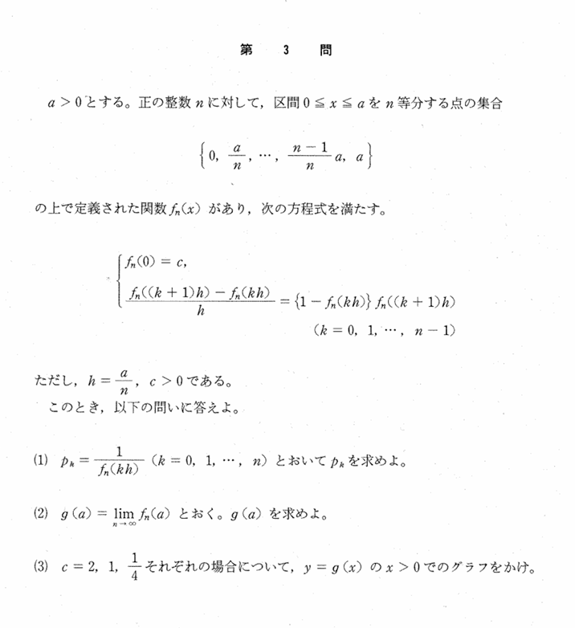

2000年 第3問
数列・極限

誘導
背景
かなり面白い背景を持っている。ロジスティック方程式という、生物の個体数の変化を表す数理モデルの微分方程式の一つである$$y'=y(1-y)\quad ,\quad y(0)=c$$というものを解くとその解は$$y(x)=\frac{1}{1+(\frac{1}{c}-1)e^{-x}}$$となり、(2)で求める$g(x)$に完全に一致する。
これはすなわち、離散的な関係式から考えて、$n\rightarrow\infty$を考えることによって微分方程式を解くということをやらせている。
さらに、異なる初期値から始めてもロジスティック方程式の平衡点y=1に落ち着くというような挙動があることを読み取ることができる。